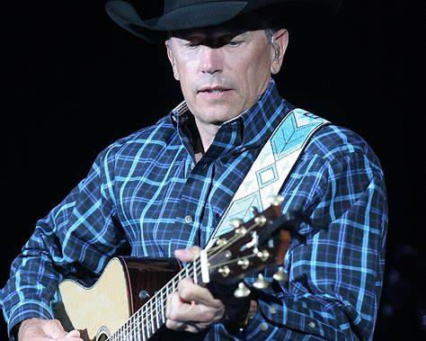
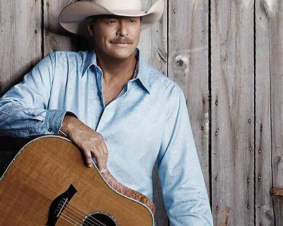
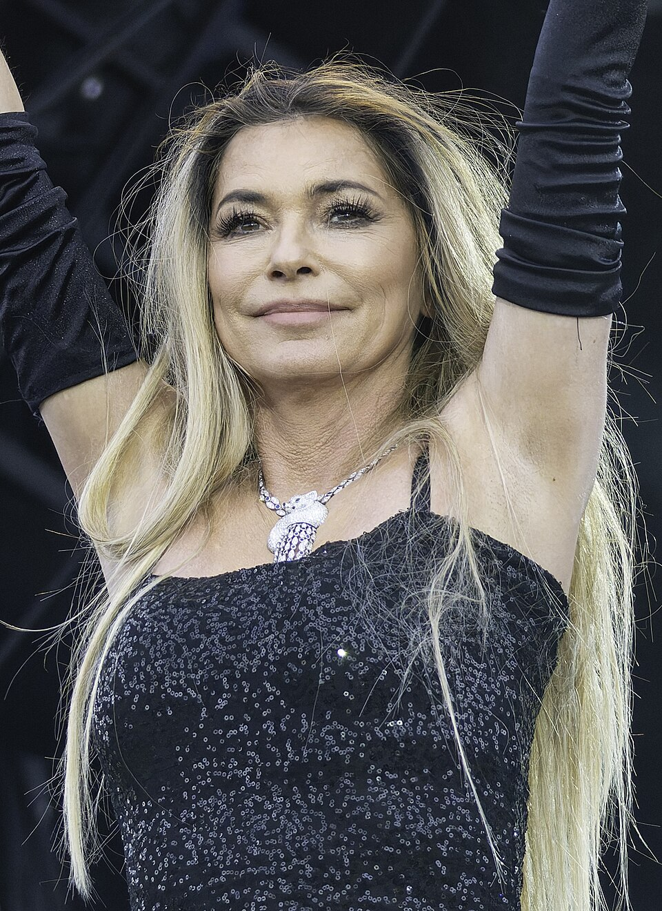

Sexta, 22h30
George Strait
Palco Estrada
Três noites dedicadas ao country, reunindo gerações que fizeram história dentro e fora das estradas.
O Violeiros do Sertão nasceu para reunir diferentes gerações da música country em três noites de shows, encontros e histórias.
O palco recebe artistas que ajudaram a construir o gênero e nomes que continuam levando essa tradição adiante.
Saiba mais sobre o festival
Palco Estrada

Palco Estrada

Palco Estrada
Programação durante toda a noite com diferentes gerações do country.
Uma programação diferente em cada dia do festival.
Música, alimentação e espaços pensados para aproveitar a noite inteira.